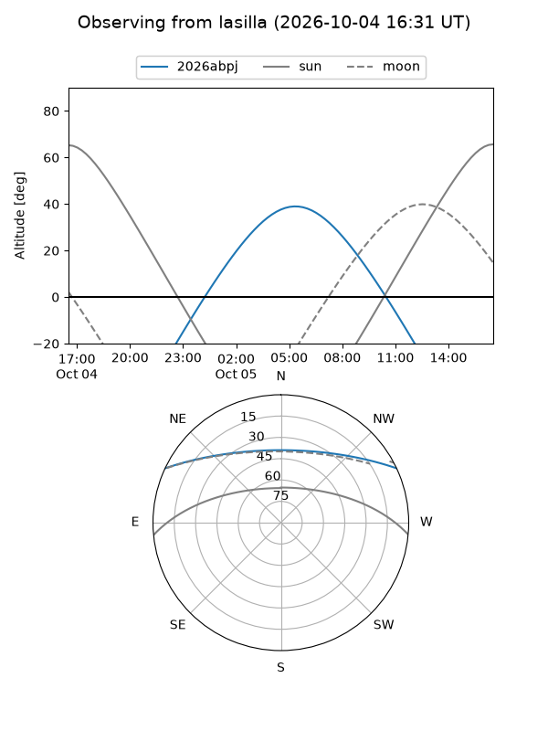
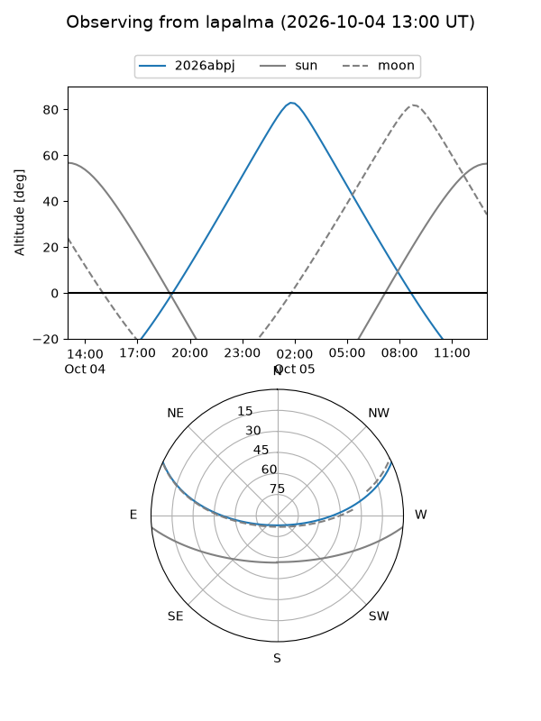
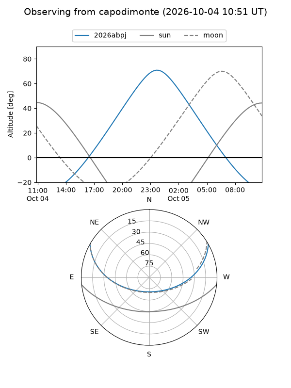
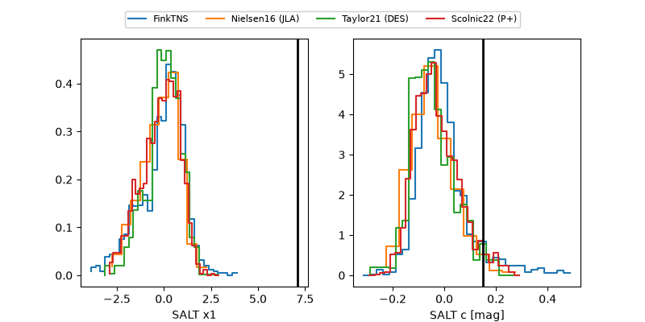

2026abpj
Target 2026abpj at 2026-10-04 12:13
Aliases and brokers:
FINK-ZTF: ztf.fink-portal.org/ZTF26absogei
Lasair-ZTF: lasair-ztf.lsst.ac.uk/objects/ZTF26absogei
ALeRCE-ZTF: alerce.online/object/ZTF26absogei
YSE-PZ: ziggy.ucolick.org/yse/transient_detail/2026abpj
TNS name: wis-tns.org/object/2026abpj
Direct TNS query: direct search
alt names
ZTF26absogei (ztf,fink_ztf)
2026abpj (tns,yse)
PS26ibg (panstarrs)
Coordinates:
equatorial (ra, dec) = 23.0274,+21.61840
equatorial (HMS+DMS) = 01:32:06.57,+21:37:06.24
galactic (l, b) = (135.3528,-40.27038)
Flags:
TNS type: nan
peak dt: +15.0
Photometry:
last ztfg=20.36, ztfr=20.06
4 ztfg, 8 ztfr detections
Lightcurve
Visibility



Additional plots
